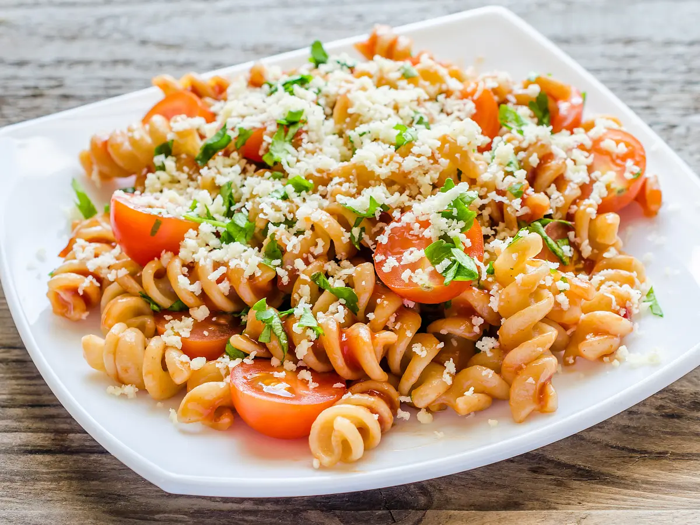

|  |
Фузилли с кальмаромКлассическая итальянская паста в виде спирали из твердых сортов пшеницы, с прекрасным нежнейшим каль- маром в чесночно - сливочным соусом, посыпанная сверху стружкой из пармезана и капельками соуса песто. |
 |
Том ЯмТом ям - кисло-острый суп с креветками, курицей, рыбой или другими морепродуктами, национальное блюдо Таиланда. В Таиланде не существует единственно верного, каноничешского рецепта супа том-ям. |
 |
ГёдзаГедза - японские жареные пельмени. По сравнению с русскими пельменями они легкие, не оставляют чувства тяжести, сильного насыщения. в них сравнительно мало теста (и оно очень тонкое, невесомое) и много начинки. Начинка у гедза может быть любой: овощная, рыбная, мясная. |